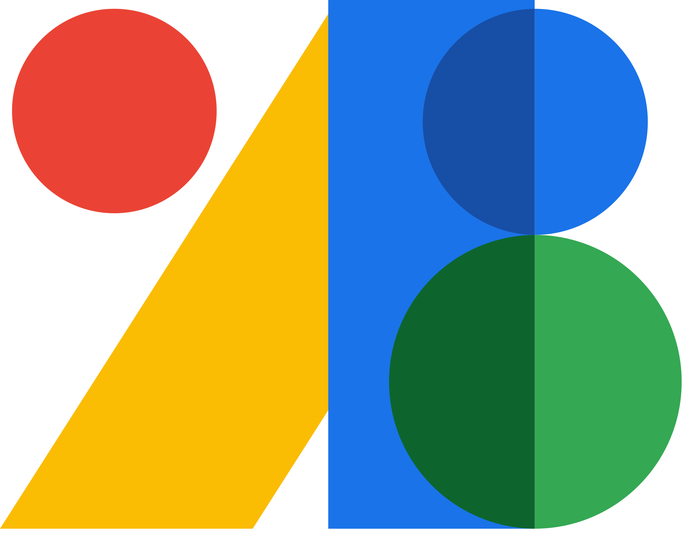

Site vitrine pour Linda Convert, praticienne en réflexologie plantaire, palmaire, crânio-faciale et auriculaire. Une plateforme moderne et accessible présentant ses prestations, tarifs, FAQ et contact. Design élégant avec palette beige/brun naturelle, navigation fluide et formulaire de contact fonctionnel pour prendre rendez-vous.

Contexte du projet
Linda Convert est une praticienne passionnée de réflexologie qui exerce en tant qu'entrepreneuse individuelle. Son site vitrine a été conçu pour présenter ses services (plantaire, palmaire, crânio-faciale, auriculaire), ses tarifs, et faciliter la prise de rendez-vous.
La plateforme combine design chaleureux et naturel (palette beige/brun), accéssibilité optimale, séances d'information complètes (FAQ), galerie de prestations avec images inspirantes, et système de contact fonctionnel. L'objectif : créer un espace de confiance et de détente pour attirer une clientèle cherchant bien-être et rééquilibrage.
Linda Convert propose
Présentation chaleureuse de Linda avec portrait, histoire personnelle et philosophie de la réflexologie pour établir la confiance.
Quatre types de réflexologies présentées avec images inspirantes, descriptions complètes et benefices spécifiques de chacune.
Tableau clair des tarifs par prestation (60 min pour 60€, réflexologie bébé 25€, combinaisons 75€) pour une visibilité maximale.
9 questions fréquentes en accordions couvrant définition, efficacité, déroulement des séances et recommandations pratiques.
Système fonctionnel avec validation, message de confirmation et données accessibles pour faciliter les demandes de rendez-vous.
Technologies utilisées
 HTML5
HTML5
 CSS3
CSS3
 JavaScript
JavaScript

G-FontsBilan & apprentissages
Linda Convert m'a demandé comment créer un site vitrine de service local avec une identité visuelle chaleureuse et sereine. Alors je lui ai crée ce site, j'ai maîtrisé l'accessibilité web (ARIA, sémantique HTML5), le design orienté bien-être avec palettes naturelles, et la création de formulaires de contact fonctionnels avec validation. Ce projet m'a montré comment mettre en confiance une clientèle via web design, contenu informatif et expérience utilisateur transparente et accessible.
Explorez le site de Linda Convert et découvrez les bienfaits de la réflexologie pour votre bien-être.